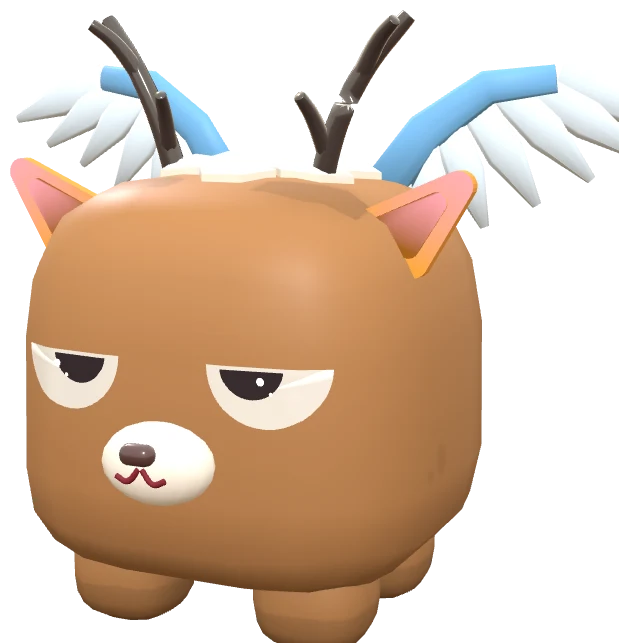
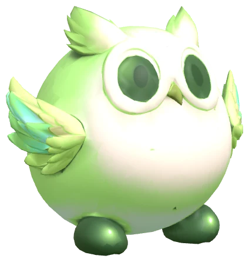
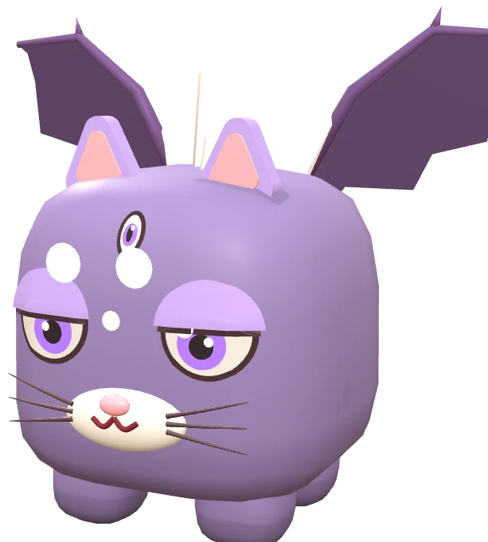
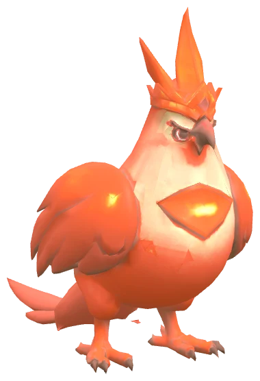
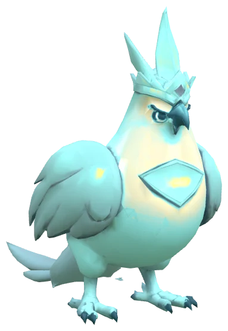
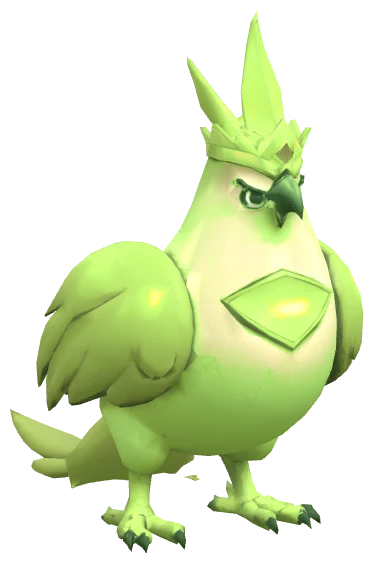
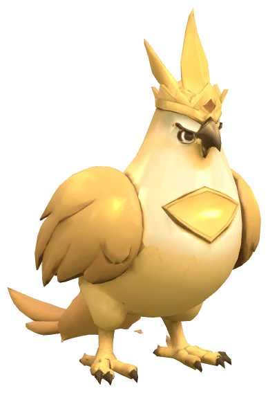

Dyeling หนึ่งตัวเป็นสัตว์หนึ่งสายพันธุ์ ย้อมสีตามเผ่า และมี DNA 6 สาย · DNA คือสิ่งที่ทำให้ Dyeling แต่ละตัวต่างกัน: บอกเผ่า ค่าสถานะ ยีน และสกิลที่ใช้ได้ · ส่วนสัตว์ที่เห็นเป็นแค่หน้าตา ไม่มีผลกับค่าสถานะหรือสกิล
A Dyeling is an animal of one species, dyed in its tribe's colour, with 6 strands of DNA · DNA is what makes every Dyeling different: it sets the tribe, the stats, the genes and the skills it can use · the animal you see is only its look, with no effect on stats or skills.
 ดู DNA ทั้ง 31 แบบในห้องสมุดSee all 31 kinds of DNA in the Library
ดู DNA ทั้ง 31 แบบในห้องสมุดSee all 31 kinds of DNA in the Library
DNA 6 สาย6 strands of DNA
ลำตัว + ขาBody + legs
10 แบบ10 kinds
เผ่าปฐพี · เผ่าวารี · เผ่าวายุ · เผ่าอัคคี · เผ่าน้ำแข็ง · เผ่าลาวา · เผ่าหมอก · เผ่าโคลน · เผ่าควัน · เผ่าทรายEarth · Water · Wind · Fire · Ice · Lava · Mist · Mud · Smoke · Sand
หัวHead
5 แบบ5 kinds
หัวเขี้ยว (ATK) · หัวเขา (DEF) · หัวจะงอย (SPD) · หัวดูด (HP) · หัวพ่น (ทุกค่า)Fang Head (ATK) · Horn Head (DEF) · Beak Head (SPD) · Drain Head (HP) · Breath Head (all stats)
ดวงตาEyes
4 แบบ4 kinds
ตาปฐมภูมิ (SPD) · ตาเรืองแสง (HP) · ตานักล่า (ATK) · ตาประกาย (DEF)Primal Eyes (SPD) · Glow Eyes (HP) · Hunter Eyes (ATK) · Sparkle Eyes (DEF)
ปีกWings
4 แบบ4 kinds
ปีกค้างคาว (SPD) · ปีกแมลง (ATK) · ปีกมังกร (DEF) · ปีกขนนก (HP)Bat Wings (SPD) · Bug Wings (ATK) · Dragon Wings (DEF) · Feather Wings (HP)
หางTail
4 แบบ4 kinds
หางหนัก (ATK) · หางหนาม (DEF) · หางแส้ (SPD) · หางดูด (HP)Heavy Tail (ATK) · Thorn Tail (DEF) · Whip Tail (SPD) · Drain Tail (HP)
แผ่นหลังBack
4 แบบ4 kinds
ครีบหลัง (SPD) · หนามหลัง (ATK) · เกราะหลัง (DEF) · ผลึกหลัง (HP)Back Fin (SPD) · Back Spikes (ATK) · Back Armor (DEF) · Back Crystal (HP)
ในวงเล็บคือค่าสถานะที่ DNA แบบนั้นเด่น
The brackets show the stat that kind of DNA is strong in.
DNA หนึ่งสายมีอะไรWhat one strand holds
- แบบของ DNA เช่น หัวเขี้ยว ตาเหยี่ยว ปีกค้างคาว · แต่ละแบบเด่นคนละค่าสถานะ
- ค่าสถานะ HP ATK DEF SPD สุ่มใหม่ทุกครั้งที่เกิด DNA ส่วนใหญ่สุ่มค่าที่ตัวเองเด่นได้สูงกว่าค่าอื่น
- ยีน 3 ตัว ยีนหลักทำงาน ยีนแฝง 2 ตัวไม่ทำงานแต่ส่งต่อให้ลูกได้ — ดูหน้ายีน
- สกิล DNA สองสายที่อยู่คนละส่วนจับคู่กันเป็นสกิลหนึ่งสกิล ทั้งเกมมี 386 สกิล · ใส่ได้ 6 สกิล — ดูหน้าสกิล
- The kind of DNA, such as Fang Head, Hawk Eyes or Bat Wings · each kind is strong in a different stat
- Stats HP, ATK, DEF and SPD are rolled anew at every birth; most kinds roll the stat they are strong in higher than the others
- 3 genes: the main gene works, the 2 hidden genes do nothing but can pass to the young — see Genes
- Skills: two strands from different parts pair up into one skill; there are 386 in the game and 6 can be equipped — see Skills
ลำตัวกำหนดเผ่า (10 เผ่า)The body sets the tribe (10 tribes)
เผ่ามาจาก DNA ลำตัว + ขา · 4 เผ่ามีธาตุเดียว อีก 6 เผ่าเป็นเผ่าผสม 2 ธาตุ · ธาตุกำหนดการแพ้ทางในการต่อสู้ ส่วนเผ่ากำหนดสีของ Dyeling
The tribe comes from the body + legs DNA · 4 tribes have one element, the other 6 are mixed tribes with 2 elements · the elements decide who counters whom in a fight, and the tribe decides the Dyeling's colour.

ดินEarth

น้ำWater

ลมWind

ไฟFire

น้ำ + ลมWater + Wind

ไฟ + ดินFire + Earth

น้ำ + ไฟWater + Fire

น้ำ + ดินWater + Earth

ลม + ไฟWind + Fire

ลม + ดินWind + Earth
สายพันธุ์สัตว์ (108 แบบ)Animal species (108 kinds)
Dyeling แต่ละตัวเป็นสัตว์หนึ่งสายพันธุ์ (มี 108 แบบ) · สัตว์ชนิดเดียวเป็นได้ทุกเผ่า สีตามเผ่า และไม่มีผลกับค่าสถานะหรือสกิล · ชื่อ Dyeling คือชื่อสัตว์ตามด้วยชื่อเผ่า
Every Dyeling is an animal of one species (there are 108) · any species can be any tribe, its colour follows the tribe, and it has no effect on stats or skills · a Dyeling's name is the animal followed by the tribe.




สัตว์ตัวเดียวกัน (นกหงอนทอง) ในสี 4 เผ่า
The same animal (Golden Crested Bird) in the colours of 4 tribes.
ดูสายพันธุ์ทั้ง 108 แบบSee all 108 species
- กระทิงBull
- กระรอกSquirrel
- กลิปโตดอนGlyptodon
- กวางDeer
- กวางมูสMoose
- กิเลนKirin
- กิ้งก่าครีบFin Lizard
- กิ้งก่าหนามThorn Lizard
- กิ้งก่าหลังหนามSpiked Lizard
- ก๊อบลินGoblin
- ควายBuffalo
- คาปิบาราCapybara
- ค้างคาวBat
- จามรีYak
- จินนีGenie
- จิ้งจอกFox
- จิ้งจอกหางฟูFluffy-Tailed Fox
- จิ้งจอกหูใหญ่Big-Eared Fox
- จิ้งจอกแคระDwarf Fox
- ซาลาแมนเดอร์Salamander
- ตุ่นปากเป็ดPlatypus
- ต้นไม้ปีศาจDemon Tree
- ต้นไม้ผีสิงHaunted Tree
- ทากSlug
- นกกระสาHeron
- นกร็อกRoc
- นกหงอนทองGolden Crested Bird
- นกฮูกOwl
- นกแก้วParrot
- นกโรบินRobin
- นากOtter
- บาคุBaku
- ปลาตีนMudskipper
- พะยูนManatee
- มังกรDragon
- มังกรกระดูกBone Dragon
- มังกรคริสตัลCrystal Dragon
- มังกรดำBlack Dragon
- มังกรปีกใสClear-Winged Drake
- มังกรปีกใหญ่Big-Winged Dragon
- มังกรเขาคู่Twin-Horned Dragon
- มังกรเขาเดี่ยวOne-Horned Drake
- มังกรแคระDwarf Dragon
- ลิงคบเพลิงTorch Ape
- ลูกปีศาจDevil Cub
- ลูกหมานรกHell Pup
- ลูกเจี๊ยบChick
- ลูกแกะLamb
- วอมแบตWombat
- สมเสร็จTapir
- สิงโตLion
- สิงโตมีปีกWinged Lion
- สุนัขล่าเนื้อHound
- สเตโกซอรัสStegosaurus
- สไลม์Slime
- หมาจิ้งจอกJackal
- หมาป่าWolf
- หมาป่าจ่าฝูงAlpha Wolf
- หมาป่าหอนHowling Wolf
- หมีขั้วโลกPolar Bear
- หมีถ้ำCave Bear
- หมูป่าหูดWarthog
- อาร์มาดิลโลArmadillo
- อิมป์Imp
- อีกาCrow
- อูฐCamel
- ฮิปโปHippo
- ฮิปโปแคระDwarf Hippo
- เต่าTurtle
- เต่าบกTortoise
- เต่ามังกรDragon Turtle
- เต่ายักษ์Giant Tortoise
- เทนงูTengu
- เทอโรแดกทิลPteranodon
- เพกาซัสPegasus
- เพนกวินเกราะArmored Penguin
- เมียร์แคตMeerkat
- เยติYeti
- เยลลี่Jelly
- เสือเขี้ยวดาบSabretooth
- เฮลฮาวด์Hellhound
- แกะSheep
- แกะปุยFluffy Sheep
- แกะเขาโค้งRam
- แคปปะKappa
- แพนด้าแดงRed Panda
- แพนเทอร์Panther
- แพะGoat
- แมมมอธMammoth
- แมวCat
- แมวกลมRound Cat
- แมวจุดSpotted Cat
- แมวน้ำแคระDwarf Seal
- แรคคูนRaccoon
- แรดRhino
- แรดขนยาวWoolly Rhino
- แรดเกราะArmored Rhino
- แร้งVulture
- แอกโซลอเติลAxolotl
- โกเลมจิ๋วTiny Golem
- โกเลมใหญ่Great Golem
- โอนิOni
- ไก่ชนRooster
- ไซคลอปส์Cyclops
- ไดโนหนามSpiked Dino
- ไดโนเขาโค้งCurved-Horn Dino
- ไทรเซราทอปส์Triceratops
- ไฮยีนาHyena
ผสมพันธุ์: ลูกได้อะไรจากพ่อแม่Breeding: what the young gets
- DNA หัว ตา ปีก หาง หลัง แต่ละสายมาจากพ่อหรือแม่ โอกาสเท่ากัน · ค่าสถานะสุ่มใหม่ทุกครั้ง
- เผ่า ดูแต้มธาตุของลำตัวพ่อแม่: เผ่าเดี่ยวให้ธาตุของตัวเอง 2 แต้ม เผ่าผสมให้ธาตุละ 1 แต้ม รวม 4 แต้ม แล้วสุ่มสองครั้ง · ธาตุเดียวกันสองครั้ง = เผ่าเดี่ยวนั้น คนละธาตุ = เผ่าผสมของสองธาตุนั้น
- สายพันธุ์สัตว์ ได้ของพ่อหรือแม่ โอกาสเท่ากัน ไม่เกี่ยวกับเผ่า
- ยีน แต่ละช่องสุ่มจากยีนของพ่อแม่: ยีนหลัก 50% · แฝง 1 30% · แฝง 2 15% · กลายพันธุ์เป็นยีนใหม่ 5% (ระดับของยีนใหม่สุ่มตามตาราง: F 40% D 25% C 17% B 10% A 6% S 2%)
- Head, eyes, wings, tail and back DNA: each strand comes from the father or the mother at equal odds · the stats are rolled anew
- Tribe follows the element points of the parents' bodies: a pure tribe gives 2 points of its element, a hybrid 1 point of each of its two; the 4 points are pooled and 2 are drawn · the same element twice = that pure tribe, two different = the hybrid of those two
- Animal species comes from the father or the mother at equal odds, whatever the tribe
- Genes: each slot is drawn from the parents' genes: main 50% · hidden 1 30% · hidden 2 15% · mutation into a new gene 5% (a new gene's tier rolls on this table: F 40% D 25% C 17% B 10% A 6% S 2%)
ตัวอย่างเผ่าของลูกExamples: the young's tribe
- เผ่าอัคคี × เผ่าอัคคี → เผ่าอัคคี 100%
- เผ่าอัคคี × เผ่าวารี → เผ่าหมอก 50% · เผ่าอัคคี 25% · เผ่าวารี 25%
- เผ่าอัคคี × เผ่าหมอก → เผ่าอัคคี 56.25% · เผ่าหมอก 37.5% · เผ่าวารี 6.25%
- เผ่าน้ำแข็ง × เผ่าทราย → เผ่าน้ำแข็ง 25% · เผ่าทราย 25% · เผ่าวายุ 25% · เผ่าโคลน 12.5% · เผ่าปฐพี 6.25% · เผ่าวารี 6.25%
- Fire × Fire → Fire 100%
- Fire × Water → Mist 50% · Fire 25% · Water 25%
- Fire × Mist → Fire 56.25% · Mist 37.5% · Water 6.25%
- Ice × Sand → Ice 25% · Sand 25% · Wind 25% · Mud 12.5% · Earth 6.25% · Water 6.25%